|
 |
| ЭЛИГАРД (ELIGARD) leuprorelin лиофилизат д/пригот. р-ра д/п/к введения; лиофилизат д/пригот. р-ра д/п/к введения в комплекте с растворителем | ||||||||||||||||||||
|
Клинико-фармакологическая группа: Аналог гонадотропин-рилизинг гормона - депо-форма Номер и дата регистрации: ЛСР-006156/09 от 29.07.09 Код ATX: L02AE02 |
Владелец регистрационного удостоверения: зарегистрировано Представительство: | |||||||||||||||||||
Форма выпуска, состав и упаковка Лиофилизат для приготовления раствора для п/к введения (шприц Б) от белого до почти белого цвета, без видимых посторонних частиц. Приложенный растворитель (шприц А) - от светло-желтой до светло-желтой с коричневатым оттенком, прозрачная, вязкая жидкость без видимых посторонних частиц; допускается наличие пузырьков воздуха. Восстановленный раствор - вязкая жидкость от светло-желтого до светло-желтого с коричневатым оттенком цвета, без видимых посторонних частиц; допускается наличие пузырьков воздуха.
Растворитель (шприц А): (сополимер поли-D,L-лактид-ко-гликолид: ПЛГХ (50:50) - 117 мг, N-метил-2-пирролидон - 226 мг) - 343 мг. Шприцы из полипропилена или сополимера циклического олефина [шприц А в комплекте с поршнем для шприца Б и пакетиком с влагопоглотителем, помещенный в контурную ячейковую упаковку из полиэфира, покрытую алюминиевой фольгой ламинированной] (1) и [шприц Б в комплекте с иглой инъекционной и пакетиком с влагопоглотителем, помещенный в упаковку ячейковую контурную из полиэфира, покрытую алюминиевой фольгой ламинированной] (1) - пачки картонные. Лиофилизат для приготовления раствора для п/к введения (шприц Б) от белого до почти белого цвета, без видимых посторонних частиц. Приложенный растворитель (шприц А) - от бесцветной до светло-желтой, прозрачная, вязкая жидкость без видимых посторонних частиц; допускается наличие пузырьков воздуха. Восстановленный раствор - вязкая жидкость от бесцветной до светло-желтого цвета, без видимых посторонних частиц; допускается наличие пузырьков воздуха.
Растворитель (шприц А): (сополимер поли-D,L-лактид-ко-гликолид: ПЛГ (75:25) - 206 мг, N-метил-2-пирролидон - 251 мг) - 457 мг. Шприцы из полипропилена или сополимера циклического олефина [шприц А в комплекте с поршнем для шприца Б и пакетиком с влагопоглотителем, помещенный в контурную ячейковую упаковку из полиэфира, покрытую алюминиевой фольгой ламинированной] (1) и [шприц Б в комплекте с иглой инъекционной и пакетиком с влагопоглотителем, помещенный в упаковку ячейковую контурную из полиэфира, покрытую алюминиевой фольгой ламинированной] (1) - пачки картонные. Лиофилизат для приготовления раствора для п/к введения (шприц Б) от белого до почти белого цвета, без видимых посторонних частиц. Приложенный растворитель (шприц А) - от бесцветной до светло-желтой, прозрачная, вязкая жидкость без видимых посторонних частиц; допускается наличие пузырьков воздуха. Восстановленный раствор - вязкая жидкость от бесцветной до светло-желтого цвета, без видимых посторонних частиц; допускается наличие пузырьков воздуха.
Растворитель (шприц А): (сополимер поли-D,L-лактид-ко-гликолид: ПЛГ (85:15) - 217 мг, N-метил-2-пирролидон - 217 мг) - 434 мг. Шприцы из полипропилена или сополимера циклического олефина [шприц А в комплекте с поршнем для шприца Б и пакетиком с влагопоглотителем, помещенный в контурную ячейковую упаковку из полиэфира, покрытую алюминиевой фольгой ламинированной] (1) и [шприц Б в комплекте с иглой инъекционной и пакетиком с влагопоглотителем, помещенный в упаковку ячейковую контурную из полиэфира, покрытую алюминиевой фольгой ламинированной] (1) - пачки картонные. * избыток лейпрорелина ацетата компенсирует потери в шприце и игле. Восстановленный раствор (вводимая доза) содержит 7.5 мг, 22.5 мг или 45 мг лейпрорелина ацетата. | ||||||||||||||||||||
| ||||||||||||||||||||
Описание препарата основано на официально утвержденной инструкции по применению и утверждено компанией-производителем для издания 2023 г. | ||||||||||||||||||||
Фармакологическое действие |
Фармакокинетика |
Показания |
Режим дозирования |
Побочное действие |
Противопоказания |
Беременность и лактация |
Особые указания |
Передозировка |
Лекарственное взаимодействие |
Условия хранения и сроки годности |
Условия реализации
Фармакологическое действие
Лейпрорелин является синтетическим непептидным аналогом естественного гонадотропин-рилизинг гормона (ГнРГ), который при длительном применении ингибирует секрецию гипофизарного гонадотропина и подавляет тестикулярный стероидогенез у мужчин. Аналог обладает большей эффективностью, чем естественный гормон, и его воздействие обратимо при прекращении лечения. Однако время восстановления концентрации тестостерона может варьировать среди пациентов. Применение лейпрорелина сначала приводит к повышению концентрации циркулирующего ЛГ и ФСГ, в результате чего временно повышается концентрация гонадных стероидов, тестостерона и дигидротестостерона у мужчин. При продолжительном применении лейпрорелина содержание ЛГ и ФСГ снижается. У мужчин содержание тестостерона снижается до кастрационного уровня (≤50 нг/дл) в течение 3-5 недель после начала лечения. Среднее содержание тестостерона через 6 месяцев лечения составляет 6.1 (±0.4) нг/дл для дозировки 7.5 мг; 10.1 (±0.7) нг/дл для дозировки 22.5 мг и 10.4 (±0.53) нг/дл для дозировки 45 мг. Эти значения сопоставимы с содержанием тестостерона после выполнения билатеральной орхиэктомии. Все пациенты в клиническом исследовании препарата Элигард 7.5 мг достигли кастрационных уровней тестостерона на 6-й неделе лечения; 94% пациентов - к 28 дню и 98% пациентов - к 35 дню. Все пациенты в клиническом исследовании препарата Элигард 22.5 мг достигли кастрационных уровней тестостерона на 5-й неделе; 99% пациентов - к 28 дню. Все пациенты (за исключением одного) в клиническом исследовании препарата Элигард 45 мг достигли кастрационных уровней тестостерона на 4-й неделе. У подавляющего большинства пациентов концентрации тестостерона уменьшались ниже 20 нг/дл, хотя полноценное преимущество данных низких уровней тестостерона пока еще не было установлено. Концентрации ПСА снизились на 94% через 6 месяцев лечения при применении препарата Элигард 7.5 мг, на 98% - при применении препарата Элигард 22.5 мг, на 97% - при применении препарата Элигард 45 мг. Длительные исследования показали, что постоянная терапия поддерживает концентрацию тестостерона ниже кастрационного уровня на протяжении до 7 лет и, по всей видимости, на неопределенный срок. Фармакокинетика
Всасывание После первой инъекции через 4-8 ч средний уровень концентрации лейпрорелина (Cmax), определяемой в сыворотке крови, повышается до 25.3 нг/дл, 127 нг/дл и 82 нг/дл при применении лейпрорелина в дозе 7.5 мг, 22.5 мг и 45 мг соответственно. После первоначального повышения (фаза плато составляет от 2 до 28 дней для дозировки 7.5 мг; от 3 до 84 дней - для дозировки 22.5 мг, от 3 до 168 дней - для дозировки 45 мг) уровень лейпрорелина в сыворотке оставался относительно стабильным: 0.28-1.67 нг/мл для дозировки 7.5 мг и 0.2-2 нг/мл для дозировок 22.5 и 45 мг. Данные о накоплении вещества при повторных инъекциях отсутствуют. Распределение Средний Vd в равновесном состоянии после в/в однократного введения лейпрорелина здоровым добровольцам мужчинам составлял 27 л. По данным исследований in vitro связывание с белками плазмы составляет от 43% до 49%. Выведение При введении 1 мг лейпрорелина ацетата в/в здоровым добровольцам мужчинам выяснилось, что при применении двухкамерной модели средний клиренс составил 8.34 л/ч с конечным T1/2 приблизительно 3 ч. Исследований по выведению препарата Элигард не проводилось. Исследований по лекарственному метаболизму препарата Элигард не проводилось. Режим дозирования
Элигард следует применять только под контролем специалиста здравоохранения, имеющего достаточный опыт для оценки эффективности лечения. Элигард назначают в виде подкожной инъекции один раз в месяц при дозировке 7.5 мг, 1 раз в 3 месяца при дозировке 22.5 мг и 1 раз в 6 месяцев при дозировке 45 мг. Содержимое двух заранее наполненных стерильных шприцев должно быть смешано непосредственно перед п/к введением препарата Элигард. Введенный раствор образует депо препарата, обеспечивающее постоянное высвобождение лейпрорелина в течение указанного периода. Как правило, терапия распространенного рака предстательной железы с использованием препарата Элигард предусматривает длительное лечение и не должна прекращаться при наступлении улучшения или ремиссии. Элигард может применяться в качестве неоадъювантной или адъювантной терапии в сочетании с лучевой терапией у пациентов с локализованным раком высокого риска и местно-распространенным раком предстательной железы. Место инъекции следует периодически менять. Необходимо избегать попадания препарата в артерию или вену. Ответ на терапию препаратом Элигард необходимо контролировать по клиническим параметрам и измерению концентрации ПСА в сыворотке крови. Результаты клинических исследований показали, что концентрация тестостерона увеличивалась в течение первых 3 дней лечения у большинства пациентов, не подвергавшихся орхиэктомии, а затем снижалась до уровней ниже таковых при медикаментозной кастрации в течение 3-4 недель. После достижения данные показатели остаются неизменными при продолжении терапии лекарственным препаратом (<1.0% случаев прорывного повышения концентраций тестостерона). Если ответ пациента на терапию является недостаточным, необходимо убедиться, что концентрация тестостерона в сыворотке крови достигла или остается на кастрационном уровне. В случае предполагаемой или известной ошибки при смешивании у пациента должна быть определена концентрация тестостерона в связи с тем, что в результате неправильного приготовления, смешивания или введения препарата могут наблюдаться случаи отсутствия клинической эффективности. У пациентов с метастатическим кастрационно-резистентным раком предстательной железы, не подвергавшихся хирургической кастрации и получающих агонисты ГнРГ, такие как лейпрорелин, лечение агонистами ГнРГ может быть продолжено на фоне применения ингибиторов биосинтеза андрогенов или ингибиторов андрогенных рецепторов. Коррекция доз для особых популяций пациентов Клинических данных по применению препарата Элигард у пациентов с печеночной или почечной недостаточностью нет. В случае предполагаемой или известной ошибки при смешивании у пациента должна быть определена концентрация тестостерона в связи с тем, что в результате неправильного приготовления, смешивания или введения препарата могут наблюдаться случаи отсутствия клинической эффективности. Рекомендации по приготовлению раствора для введения Если препарат был приготовлен с нарушением инструкций, его не следует использовать в связи с тем, что при неправильном приготовлении раствора для п/к введения могут наблюдаться случаи отсутствия клинической эффективности. Сначала рекомендуется подготовить пациента к введению препарата, а затем приступить к приготовлению раствора в соответствии с рекомендациями, представленными ниже. Упаковку достают из холодильника примерно за 30 мин до использования и выдерживают при комнатной температуре. После извлечения из холодильника препарат может храниться в оригинальной упаковке при комнатной температуре (не выше 25°С) до 4 недель. Шаг 1. Извлечь из коробки две контурные ячейковые упаковки и открыть их, потянув за свободный край алюминиевой фольги, извлечь содержимое ячейковых упаковок (рис. 1.1 и 1.2) и положить на чистую поверхность. Следует выбросить пакетики с влагопоглотителем. 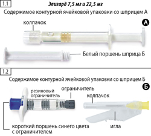 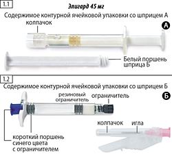 Шаг 2. Взять шприц Б и извлечь из него короткий поршень синего цвета вместе с прикрепленным ограничителем серого цвета (не следует выкручивать поршень из ограничителя), следует выбросить их (рис. 2). 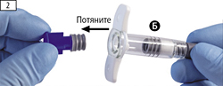 Не следует смешивать содержимое шприцев пока синий короткий поршень с прикрепленным ограничителем серого цвета не будет извлечен из шприца Б. Шаг 3. Взять белый поршень для шприца Б и вставить его в шприц Б со стороны оставшегося серого ограничителя (рис. 3, шаг 1), провернуть поршень по часовой стрелке до ограничителя (рис. 3, шаг 2). 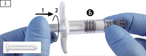 Шаг 4. Снять серый резиновый колпачок со шприца Б и отложить шприц (рис. 4). 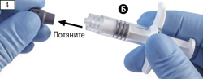 Шаг 5. Взять шприц А и, удерживая его в вертикальном положении, чтобы избежать протечки растворителя, открутить прозрачный колпачок со шприца А (рис. 5).
Шаг 6. Соединить два шприца вместе, шприц А снизу, и вкрутить шприц Б в шприц А по часовой стрелке до полной фиксации (рисунки 6а, 6b). Не следует закручивать шприцы слишком плотно. 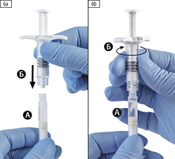 Шаг 7. Перевернуть соединенные шприцы так, чтобы шприц Б оказался снизу, и нажать на поршень шприца А до момента полного ввода содержимого шприца А (растворитель) в шприц Б (содержащий порошок лейпрорелина ацетата), шприцы следует держать вертикально (рис. 7). 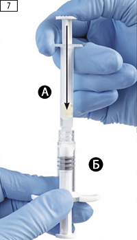 Шаг 8. Держа шприцы в строго горизонтальном положении, тщательно перемешать содержимое обоих шприцев, 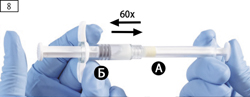 Следует избегать перегиба системы (это может стать причиной протечки, поскольку шприцы могут быть недостаточно плотно закручены). После тщательного перемешивания получается вязкий раствор от бесцветного до светло-коричневого цвета (могут наблюдаться оттенки белого или светло-желтого цвета). Важно: необходимо использовать раствор сразу после приготовления, поскольку его вязкость со временем увеличивается. Замораживать готовый продукт запрещено. Следует помнить о том, что препарат нужно смешивать так, как описано в инструкции; встряхивание не обеспечит надлежащего перемешивания. Шаг 9. Держать шприцы вертикально, шприц Б - снизу. Шприцы должны быть надежно закреплены. Нажимая на поршень шприца А, и слегка оттягивая вниз поршень шприца Б, переместить все содержимое в шприц Б (рис. 9). 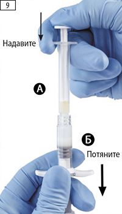 Шаг 10. Открутить шприц А, продолжая нажимать на поршень шприца А (рис. 10). Необходимо убедиться, что содержимое не вытекает из шприца, т.к. не удастся закрепить иглу надлежащим образом в случае утечки. 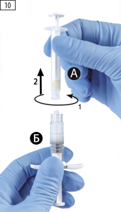 Внимание: в растворе могут присутствовать один большой или несколько маленьких пузырьков воздуха, это допустимо. Не следует пытаться удалять пузырьки из шприца Б на этом этапе, поскольку это может привести к потере препарата. Шаг 11
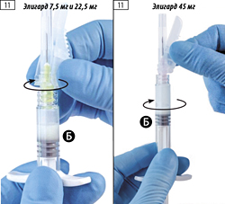 Важно: не перетягивать иглу слишком сильно, так как может треснуть разъем иглы, что приведет к утечке препарата во время инъекции. В случае если разъем иглы треснул, имеет внешние признаки повреждения или если произошла утечка, препарат не следует использовать. Замена поврежденной иглы на аналогичную недопустима, препарат вводить не следует. Весь препарат следует безопасно утилизировать. В случае повреждения разъема иглы следует использовать новую дополнительную упаковку препарата. Шаг 12. Переместить защитное устройство в направлении от иглы и перед введением препарата снять защитный колпачок с иглы (рис. 12). 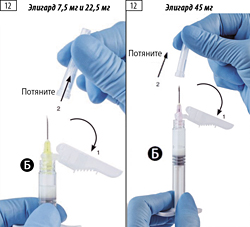 Важно: не следует приводить в действие защитное устройство иглы до введения препарата. Шаг 13. До начала введения удалить большие пузырьки воздуха из шприца Б. Ввести препарат подкожно, параллельно удерживая защитное устройство на расстоянии от иглы. Необходимо убедиться в том, что введен весь препарат из шприца Б. Шаг 14. После инъекции необходимо незамедлительно активировать защитное устройство иглы любым из двух способов, описанных ниже. 1 способ. Закрытие на плоской поверхности Положить шприц с иглой на плоскую поверхность вниз рычагом защитного устройства и нажатием на рычаг активировать защитный механизм (рис. 14.1а). 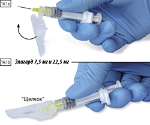 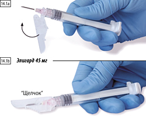 Необходимо убедиться, что рычаг переведен в закрытое положение и кончик иглы полностью закрыт (до характерного щелчка) (рис. 14.1b). 2 способ. Закрытие большим пальцем Поместить большой палец на защитное устройство (рис. 14.2а), накрыть наконечник иглы и активировать защитный механизм. Необходимо убедиться, что рычаг переведен в закрытое положение и кончик иглы полностью закрыт (до характерного щелчка) (рис. 14.2b). 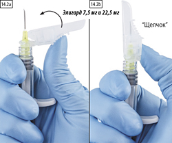 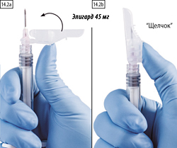 Шаг 15. После закрытия защитного механизма немедленно поместить иглу и шприц в соответствующий контейнер для острых предметов. Побочное действие
Нежелательные явления, вызванные приемом препарата Элигард, обусловлены главным образом специфическим фармакологическим действием лейпрорелина, вызывающим увеличение и снижение концентрации гормонов. Самыми распространенными побочными эффектами являлись: "приливы", недомогание, тошнота и слабость, раздражение в месте введения препарата. Слабые или умеренно выраженные "приливы" наблюдались у приблизительно 58% пациентов. Следующие нежелательные явления были зафиксированы во время проведения клинических исследований препарата Элигард у пациентов с распространенным раком предстательной железы. Частота побочных реакций, приведенных ниже, изложена в соответствии со следующей градацией: очень часто (>1/10), часто (>1/100, <1/10); нечасто (>1/1000, <1/100); редко (>1/10 000, <1/1000); очень редко (<1/10000), неизвестно (невозможно оценить на основании имеющихся данных). Инфекционные и паразитарные заболевания: часто - назофарингит; нечасто - инфекция мочевыводящих путей, ограниченная инфекция кожных покровов. Со стороны обмена веществ и питания: нечасто - ухудшение течения сахарного диабета. Психические нарушения: нечасто - необычные сновидения, депрессия, снижение либидо. Со стороны нервной системы: нечасто - головокружение, головная боль, гипестезия, бессонница, нарушение вкусовых ощущений, нарушение обоняния, вертиго; редко - непроизвольные патологические движения. Со стороны сердца: неизвестно - удлинение интервала QT. Со стороны сосудистой системы: очень часто - "приливы"; нечасто - повышение АД, снижение АД; редко - обморок, коллапс. Со стороны дыхательной системы, органов грудной клетки и средостения: нечасто - ринорея, диспноэ; неизвестно - интерстициальное заболевание легких. Со стороны желудочно-кишечного тракта: часто - тошнота, диарея, гастроэнтерит, колит; нечасто - запор, сухость во рту, диспепсия, рвота; редко - метеоризм, отрыжка. Со стороны кожи и подкожной клетчатки: очень часто - экхимозы, эритема; часто - зуд, ночная потливость; нечасто - холодный пот, повышенное потоотделение; редко - алопеция, кожный зуд. Со стороны скелетно-мышечной и соединительной ткани: часто - артралгия, боль в конечностях, миалгия, дрожь, слабость; нечасто - боль в спине, мышечные судороги. Со стороны почек и мочевыводящих путей: часто - нарушение мочеиспускания, затрудненное мочеиспускание, дизурия, никтурия, олигурия; нечасто - спазм мочевого пузыря, гематурия, увеличение частоты мочеиспускания, задержка мочеиспускания. Со стороны половых органов и молочной железы: часто - болезненность грудных желез, боль в яичках, атрофия яичек, гипертрофия грудных желез, бесплодие, эректильная дисфункция, уменьшение размеров полового члена; нечасто - гинекомастия, импотенция, тестикулярные нарушения; редко - боль в грудной железе. Общие расстройства и нарушения в месте введения: очень часто - повышенная утомляемость, жжение в месте введения, парестезия в месте введения; часто - недомогание, боль в месте введения, кровоподтек, жжение (ощущение покалывания в месте инъекции); нечасто - зуд в месте введения, уплотнение в месте введения, заторможенность, болевые ощущения, пирексия; редко - образование язвы в месте введения; очень редко - некроз в месте введения. Со стороны крови и лимфатической системы: часто - гематологические изменения, анемия. Со стороны показателей лабораторных и инструментальных исследований: часто - повышение активности КФК, увеличение времени коагуляции; нечасто - повышение активности АЛТ, гипертриглицеридемия, увеличение протромбинового времени, увеличение массы тела. К другим нежелательным явлениям при приеме лейпрорелина ацетата относятся: периферические отеки, эмболия легочной артерии, ощущение сердцебиения, миалгия, мышечная слабость, нарушение кожной чувствительности, озноб, головокружение, кожная сыпь, амнезия и нарушение зрения. При продолжительном применении препаратов данного класса отмечали атрофию мышц. Редко поступали сообщения о случаях возникновения инфаркта, вызванного гипофизарной апоплексией после приема антагонистов ГнРГ краткосрочного и длительного действия. Также были зафиксированы случаи возникновения тромбоцитопении и лейкопении, изменения толерантности к глюкозе. После введения аналога агониста ГнРГ редко были описаны случаи возникновения судорог. После введения агониста ГнРГ редко были описаны случаи развития анафилактических/анафилактоидных реакций. Местные реакции после введения препарата Элигард такие же, как и при п/к введении других препаратов. В целом, местные реакции после введения препарата носят умеренный характер и являются краткосрочными. Изменение плотности костной ткани В публикациях отмечалось уменьшение плотности костей у мужчин после орхиэктомии или терапии аналогами ГнРГ. Можно предположить, что долгосрочная терапия лейпрорелином приводит к усилению симптомов остеопороза, что повышает риск переломов. Усиление симптомов и признаков заболевания Терапия лейпрорелина ацетатом может привести к усилению симптомов заболевания в течение первых недель лечения. В случае заболеваний с метастазами в позвоночник и/или обструкцией мочевых путей или гематурией возможно возникновение таких неврологических осложнений, как слабость и/или парестезия нижних конечностей или ухудшение симптомов нарушения мочеиспускания. Противопоказания
Противопоказан женщинам и детям. Особые указания
При неправильном приготовлении раствора для п/к введения могут наблюдаться случаи отсутствия клинической эффективности. Элигард должен применяться под наблюдением врача, имеющего опыт проведения противоопухолевой терапии. Ответ на терапию препаратом Элигард необходимо контролировать по клиническим параметрам и измерению концентрации ПСА в сыворотке крови. Результаты клинических исследований показали, что концентрация тестостерона увеличивается в первые 3 дня лечения у большинства пациентов без орхиэктомии, а затем снижается до уровня медикаментозной кастрации в течение 3-4 недель. Впоследствии данные показатели остаются неизменными при продолжении терапии лекарственным препаратом. В случае, если ответ пациента на терапию является недостаточным, необходимо убедиться, что концентрация тестостерона в сыворотке крови достигла или остается на кастрационном уровне. Андрогенная депривационная терапия может удлинять интервал QT. Перед назначением препарата Элигард следует оценивать соотношение пользы и риска (включая возникновение желудочковой тахикардии типа "пируэт") у пациентов с указаниями в анамнезе или факторами риска удлинения интервала QT, принимающих препараты, которые могут удлинять интервал QT. Заболевания сердечно-сосудистой системы Сообщалось о повышенном риске развития инфаркта миокарда, внезапной сердечной смерти и инсульта при приеме мужчинами препаратов-агонистов ГнРГ. Такой риск не подкреплен достаточным количеством результатов в пределах обобщенного соотношения показателей, поэтому его следует внимательно оценивать вместе с риском развития сердечно-сосудистых заболеваний при принятии решения о выборе метода лечения для пациентов, страдающих раком простаты. Пациенты, принимающие препараты-агонисты ГнРГ, должны проходить обследование на предмет появления симптомов и признаков, свидетельствующих о развитии сердечно-сосудистых заболеваний, а также проходить лечение, основанное на современных принципах клинической практики. Временное повышение содержания тестостерона Элигард, как и другие препараты-агонисты ГнРГ, в течение первой недели лечения вызывает кратковременное повышение концентрации тестостерона, дигидротестостерона и кислой фосфатазы в сыворотке крови, в связи с чем у пациентов могут усилиться симптомы или возникнуть новые, такие как боль в костях, неврологические расстройства, гематурия, обструкция мочеточника или инфравезикальная обструкция. Эти симптомы обычно проходят при продолжении терапии. Дополнительное применение соответствующего антиандрогена за 3 дня до начала терапии препаратом Элигард и продолжение его приема в течение первых 2 или 3 недель лечения предупреждает последствия первоначального повышения концентрации тестостерона. После выполнения кастрации хирургическим путем применение препарата Элигард не приводит к дальнейшему снижению тестостерона в сыворотке крови. Изменения плотности костей В публикациях отмечалось уменьшение плотности костей у мужчин после орхиэктомии или терапии агонистом ГнРГ. Антиандрогенная терапия значительно повышает риск переломов костей в результате возникновения остеопороза. Информация по данному вопросу в настоящее время ограничена. Переломы, связанные с развитием остеопороза, отмечались у 5% пациентов, получавших антиандрогенную терапию на протяжении 22 месяцев, а также у 4% больных при продолжительности лечения от 5 до 10 лет. В целом, риск переломов костей в результате возникновения остеопороза выше такового для патологических переломов. Помимо продолжительного дефицита тестостерона на развитие остеопороза может влиять преклонный возраст, курение, потребление алкоголя, лишний вес и недостаточные физические нагрузки. Гипофизарная апоплексия В течение пострегистрационного периода применения препарата, поступали сообщения о случаях возникновения гипофизарной апоплексии (редко) (клинический синдром, возникающий после инфаркта гипофиза), у большинства пациентов симптомы проявлялись после приема препаратов-агонистов ГнРГ через 2 недели после приема первой дозы, у некоторых - в течение первого часа. В данном случае, гипофизарная апоплексия проявляется в виде таких симптомов как головная боль, рвота, нарушение зрения, офтальмоплегия, изменение психического состояния и сердечно-сосудистой недостаточности, и требует немедленного оказания медицинской помощи. Гипергликемия и сахарный диабет Гипергликемия и повышенный риск развития сахарного диабета отмечались у мужчин, принимавших препараты-агонисты ГнРГ. Гипергликемия может свидетельствовать о развитии сахарного диабета или ухудшении гликемического контроля у пациентов с сахарным диабетом. Следует периодически производить мониторинг концентрации глюкозы в крови и/или гликированного гемоглобина (HbA1c) у пациентов, принимающих препараты-агонисты ГнРГ, а также осуществлять подбор необходимых современных методов лечения гипергликемии или сахарного диабета. Судороги В течение пострегистрационного периода поступали сообщения о возникновении судорог у пациентов, получавших лечение лейпрорелина ацетатом при наличии или в отсутствие в анамнезе предрасполагающих факторов. При судорогах следует проводить лечение, основанное на современных клинических рекомендациях. Другие явления При применении агонистов ГнРГ сообщалось также о случаях возникновения обструкции мочевыводящих путей и компрессии спинного мозга, что может привести к параличу как с развитием фатальных осложнений, так и без них. В случае компрессии спинного мозга или развитии нарушения функции почек следует прибегнуть к стандартной терапии этих осложнений. За пациентами с метастазами в позвоночник и/или головной мозг, а также за пациентами с обструкцией мочевыводящих путей следует вести тщательное наблюдение в течение нескольких первых недель лечения. Влияние на способность к управлению транспортными средствами и механизмами Некоторые побочные реакции препарата, такие как повышенная усталость, головокружение, нарушения зрения, могут отрицательно влиять на способность к управлению автомобилем и выполнению потенциально опасных видов деятельности, требующих повышенной концентрации внимания и быстроты психомоторных реакций. Передозировка
Данных относительно передозировки не имеется. В случае передозировки больному следует проводить симптоматическое лечение. Лекарственное взаимодействие
Исследований по изучению фармакокинетического взаимодействия препарата Элигард с другими препаратами не проводилось. О взаимодействии препарата Элигард с другими лекарственными препаратами не сообщалось. В связи с тем, что андрогенная депривация может удлинять интервал QT, следует тщательно взвесить одновременное применение препарата Элигард с другими препаратами, удлиняющими интервал QT, или препаратами, способными вызывать желудочковую тахикардию типа "пируэт", такими как антиаритмические препараты класса IА (например, хинидин, дизопирамид) или класса III (например, амиодарон, соталол, дофетилид, ибутилид), метадон, моксифлоксацин, нейролептики и т.д. Условия хранения и сроки годности
Препарат следует хранить в оригинальной упаковке в недоступном для детей месте при температуре от 2° до 8°С. Срок годности - 2 года. Не использовать препарат по истечении срока годности. Готовый раствор стабилен химически и физически в течение 30 минут при температуре 25°С. |
||||||||||||||||||||
Вернуться наверх |
||||||||||||||||||||

Copyright © Справочник Видаль «Лекарственные препараты в России», Москва, Россия